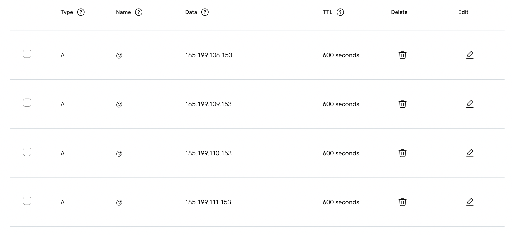
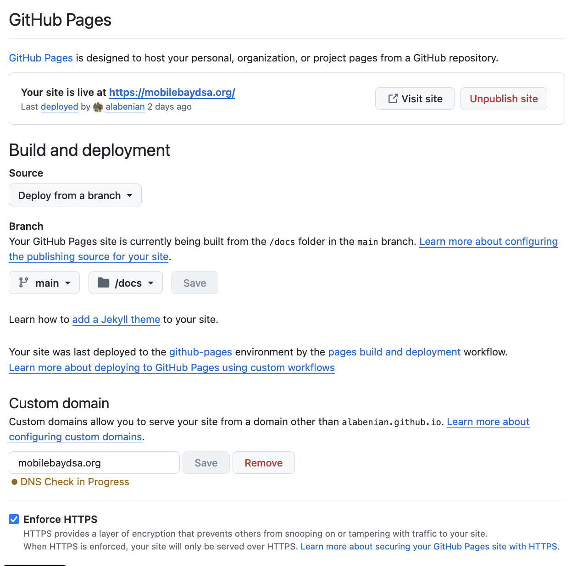

Chapter 1 Basic Hosting Information
Our domain name mobilebaydsa.org is registered through Godaddy and currently presents the Github Pages site at https://alabenian.github.io/mobilebaydsa. It could present any other source, but I chose to use Pages because our Godaddy plan did not come with a site builder and other options would cost some money while Pages was free, and because it gives us complete control over the site as long as it’s static (i.e. as long as we don’t need to store data on the fly, and all processing can be left to the user’s computer, unless an additional outside service is used) and its contents are safe to keep public. Godaddy is told where to get the website using four A-type “@” DNS records which give it the IP range of Github and one CNAME-type “www” record which tells it to use alabenian.github.io:

All this is available from Domain/DNS/DNS Records at the mobilebaydsa.org control page in Godaddy; a more in-depth tutorial is available at this Medium page. Part of the original process involved also deleting the DNS records for the fallback site generated by Godaddy.
Github makes things easy to set up on its end: we publish the site to Github as a repository (https://github.com/alabenian/mobilebaydsa), enable Github Pages, which will automatically deploy it to [username].github.io/[repository name], then tell it to use the domain name mobilebaydsa.org and enforce HTTPS:

This should then automatically add a CNAME document containing “mobilebaydsa.org” to the repository. The only other setting I’ve changed here is to have it deploy from the /docs/ folder of the repository rather than the root. Here /docs/ is just a renamed version of the /_site/ output of Jekyll; this is deployed as a static site pre-built by Jekyll locally rather than one where Github runs Jekyll itself after changes are made to the repository, due to an incompatibility with one of the plugins I was using for our events posts (jekyll-leaflet). I will explain this more later, but for now, it’s not relevant.
1.1 Github Pages and Potential Alternatives
Github Pages is a nice free way to host the website with maximal control over its contents as mentioned before, but it can be somewhat inaccessible to anyone who isn’t already used to working with websites this way. The biggest con besides this is the fact that, on the free plan, all contents of the site have to be public if an external service is not used to store private, member-only information. Despite the extra difficulty of getting set up for those who would already have access, it’s arguably more democratic – changes are published to the site when someone makes changes on their own download of the repository and sends them to Github through a commit with details of the changes they made to a local branch via the Github Desktop app (or via the command line), before making a push request that, when accepted, will publish them to the main branch and thereby the official website. The push request can be accepted by the owner (currently “alabenian,” but could be transferred to an official Mobile Bay DSA account) or anyone who has been listed as a collaborator on the project. This setup has the benefit of allowing anyone to suggest changes to the website to be confirmed by authorized accounts. This way everyone has a voice to publish blog posts, new pages, design ideas, etc. to the site in a way that official collaborators can see every change that has been made and prevent security problems. The site uses a few tools, primarily Jekyll, but is otherwise made from scratch.
It might be better to use a site builder like Wordpress.com which allows easier visual editing and supports blogs, etc. the same as Jekyll. Wordpress is especially nice because it would allow us to include member-only content on the website, secured either by password or a whitelist of Wordpress accounts. Wordpress does not allow free sites to use custom domains, however, and the cheapest plan that does is priced at $96/year. Godaddy has a forwarding feature that would let us send anyone at mobilebaydsa.org to the Wordpress site, though I don’t know how this would affect the site’s presence in Google searches. The other major differences to consider are restrictions on design (which can also be removed with a $24/year custom CSS add-on) and a Wordpress watermark that comes with the free plan (I’ve seen this on other DSA chapter sites, and it’s not too bad).